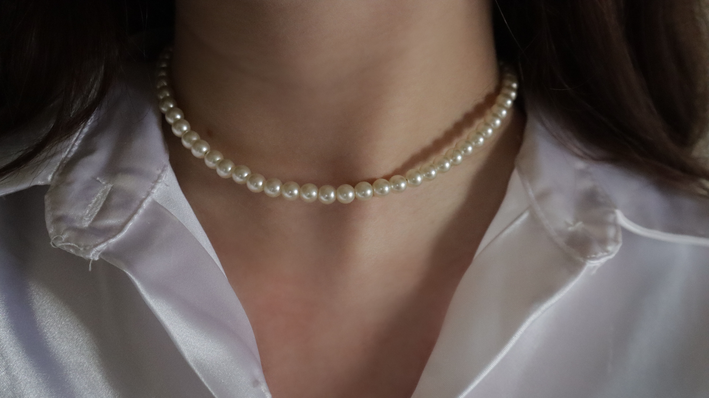

Where simple meets sophisticated. Gabby's jewlery ranges from bracelets to necklaces, all of which are handmade.

Photography is also one of Gabby's notable hobbies and has been another creative venture that she has been able to combine with her jewelry making. Photographing her pieces has brought joy and is another aspect of her business that she is eager to explore. In the future, she hopes to continue to tie these two interests.

The products are all versatile, meaning, anyone is fit to wear her products as she caters to all. Whether its a get together with a friend, or even a wedding, Jewelery by Gabby is a perfect accessory to any outfit and is one that is everlasting! These pieces never go out of style and complement whatever the circumstance.